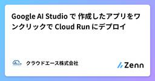
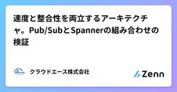
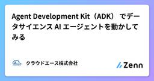
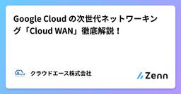
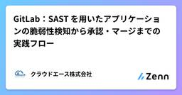
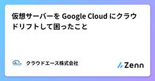
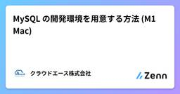

クラウドエース株式会社さんのフィード
https://zenn.dev/cloud_ace
クラウドエース株式会社 公式技術ブログです。 ※本サイトに掲載されている商品またはサービスなどの名称は、各社の商標または登録商標です。
フィード

Google AI Studio で 作成したアプリをワンクリックで Cloud Run にデプロイ 1
1
クラウドエース株式会社さんのフィード
はじめにこんにちは、クラウドエースの高牟礼です。皆さんは「こんな AI アプリがあったら便利なのに…」と、ふとアイデアが浮かんだことはありませんか？最近の AI は非常に賢く、面白い応答を簡単に得られます。ですが、それを自分だけで楽しむのではなく、誰もが使える Web アプリとして形にし、世界に公開するまでには、API を呼び出すコードを書き、UI（見た目）を作り、サーバー（インフラ）を準備し、公開（デプロイ）するといった、意外と多くの手間と時間がかかりますよね。アイデアを思いついても「いざ作るとなると、ちょっと腰が重いな…」と感じるのも無理はありません。しかし...
3日前

速度と整合性を両立するアーキテクチャ。Pub/SubとSpannerの組み合わせの検証 1
クラウドエース株式会社さんのフィード
はじめにこんにちは。クラウドエース株式会社 第一開発部のダッフィです。アプリケーション開発を中心に活動しています。今回は、アプリケーションを設計する上で多くの開発者が直面する 「処理のスピード」 と 「データの正確さ」 のジレンマについて、僕が注目した一つの解決策を紹介したいと思います。その鍵となるのが 「イベント駆動型アーキテクチャ（EDA）」 です。EDAは、システムを小さな部品に分け、それらが「イベント」という合図をきっかけに連携する仕組みです。このおかげで、システムは変化に強く、たくさんの仕事を効率よくさばけるようになります。しかし、この便利な仕組みには大きなジレン...
3日前

Agent Development Kit（ADK） でデータサイエンス AI エージェントを動かしてみる
クラウドエース株式会社さんのフィード
はじめにこんにちは、クラウドエースの木村です。近年、AI エージェント技術は目覚ましい進化を遂げています。単一の指示に応答する従来のチャットボットとは異なり、自律的に思考し、計画を立て、複雑なタスクを実行する能力を持つようになりました。この先進的なエージェント開発を支援するため、Google は、Google Cloud NEXT'25 にて Agent Development Kit (ADK) を発表しました。本記事では、ADK をこれから利用する開発者の方を対象に、公式サンプルの中からデータ分析に特化した data-science エージェントを取り上げ、その環境構築か...
3日前

Google Cloud の次世代ネットワーキング「Cloud WAN」徹底解説！
クラウドエース株式会社さんのフィード
はじめにこんにちは、クラウドエースの NW ギルド に所属している清水です。デジタルトランスフォーメーション（DX）やマルチクラウドの普及に伴い、企業のネットワークはますます複雑化しています。従来の WAN が抱えるコスト、パフォーマンス、セキュリティの課題を解決するソリューションとして、Google Cloud が提供する「Cloud WAN」が注目されています。この記事では、 Cloud WAN の概要から、構成する主要なサービス、具体的なユースケースまでを、構成図のイメージを交えながら徹底解説します。https://cloud.google.com/blog/ja/pr...
3日前

GitLab：SAST を用いたアプリケーションの脆弱性検知から承認・マージまでの実践フロー
クラウドエース株式会社さんのフィード
はじめにこんにちは、クラウドエースの岸本です。今回は以下の内容を解説しようと思います。GitLab の SAST 機能を用いて Cursor で開発したアプリケーションの脆弱性を検出する方法脆弱性が検知されてから、検知内容を確認し、承認してマージするまでの一連のフロー!なお、本ソースコードの脆弱性は意図的に作成したものです。 1. 環境ソースコード管理: GitLab SaaSCI/CD 実行環境: GitLab がホストする SaaS Runnerプログラミング言語: Python を使用した Web アプリケーション 2. GitLab ...
4日前

仮想サーバーを Google Cloud にクラウドリフトして困ったこと 1
クラウドエース株式会社さんのフィード
こんにちは。クラウドエース株式会社で Google Cloud 認定トレーナーをしている廣瀬 隆博です。個人的にはライブこそヘヴィメタルの醍醐味だと思っているので、今回は 月末 Tech Lunch Online#2 - Google Cloud を語る！- でライブしてきた内容をお届けします。ライブといっても Lightning Talk（以下、LT）ですので、内容は短めですね。気軽に読んでもらったらと思います。https://jaguer-tech-lunch.connpass.com/event/354120/ 月末 Tech Lunch とは月末 Tech Lunc...
5日前

MySQL の開発環境を用意する方法 (M1 Mac)
クラウドエース株式会社さんのフィード
はじめにこんにちは、クラウドエースの許です。今回はローカル環境に MySQL 環境を構築するための方法を紹介します。ただし、M1 Mac (もしくは別の Apple シリコン搭載の Mac)での構築を前提となりますので、他の環境は多少違った構築方法になると思います。 準備MySQL サーバーと接続できることを確認するために、GUI ツールの MySQL Workbench をインストールします。CUI に慣れている方であれば、インストールはスキップしても大丈夫です。ここからインストールM1 Mac のアーキテクチャは ARM なので ARM 版をインストールしてくだ...
7日前

開発環境の Autopilot GKE のコストを削減する方法
クラウドエース株式会社さんのフィード
こんにちは！クラウドエースの kazz です。この記事では、開発環境において Autopilot モードの Google Kubernetes Engine (以下、GKE) のコストを削減する方法について紹介します。 TL;DR止まっても問題のない Pod を Spot VM に移行することで、Pod にかかるリソースコストを最大 91% 削減できる作業時間外の夜間や休日は Pod を停止することで、課金を抑えられる Autopilot モードの GKE のコストAutopilot モードの GKE は、大きく分けて以下の 2 つのコストがかかります。クラスタ管...
12日前
Application Integration で FTP サーバから BigQuery への連携を構築してみた
クラウドエース株式会社さんのフィード
はじめにこんにちは、クラウドエースのベアです。今回は Application Integration を使用して FTP サーバーから CSV ファイルをダウンロードし、Cloud Storage を経由して BigQuery に格納するデータ連携を行いたいと思います。 Application Integration についてApplication Integration とは、Google Cloud が提供する iPaaS (Integration Platform as a Service) で様々なアプリケーションやサービスを連携させ、業務プロセスを自動化できるプロ...
17日前
VPC 接続前に知っておこう！Private Service Connect
クラウドエース株式会社さんのフィード
はじめにこんにちは。クラウドエースの田中です。わたしたちが Google Cloud を利用する際、さまざまなサービスや VPC を利用します。そんなとき、こんな困りごとはないでしょうか。VPC 同士を接続したいから VPC ピアリングの利用を検討しているけど、IP アドレスの重複管理・ルーティングの管理が大変例: 最初は VPC 同士の接続なんていらないはずだったのに、後から追加で考える必要が出てきてしまったVPC 全体をつなぐことになる VPC ピアリングより、細かい粒度でアクセス制御を行いたい各サービス間での通信を行う時、その通信をインターネットに出さず ...
17日前
企業エンジニア向けに無料で使えるDocker Desktopの代替ツールを比較してみた
クラウドエース株式会社さんのフィード
はじめにこんにちは。クラウドエースの荒木です。2021 年 9 月に Docker Desktop の企業ライセンス有料化が発表されて以来 [1]、多くの開発者や企業が代替手段を模索する状況が続いています。その発表から数年が経ち、代替ツールも成熟してきた今、「結局どれを選べばいいの？」という質問をよく見かけます。弊社でも Docker Desktop 利用に制約があるため、様々な代替ツールを試しました。そこで今回は、2025 年時点での Docker Desktop 代替ツールを、実際の使用感も含めて比較検討してみたいと思います。 Docker Desktop の企業ライセ...
18日前
AIを使うと思考力は本当に低下する？思考停止を避けて、AIを「考えるための道具」にする方法
クラウドエース株式会社さんのフィード
はじめにこんにちは。クラウドエース株式会社 第四開発部の相原です。今回の記事は、科学誌「societies」に投稿された「社会における AI ツール: 認知的オフロード傾向と批判的思考への影響」という題で提出された論文を基に「AI を使うと思考力が落ちるのか？」についてまとめました。!「認知的オフロード傾向」とは、簡単に言うと自分の記憶や思考を外部の道具や他者に頼る傾向のことです。たとえば、スマホで予定を全部管理する行為や、知らないことはすぐGoogleで検索する行為が例として挙げられるでしょう。 記事の要約AI の過度な利用は批判的思考や情報精査能力を低下させる可...
20日前
Professional Cloud Database Engineer 認定試験範囲の解説
クラウドエース株式会社さんのフィード
こんにちは。クラウドエース株式会社で Google Cloud 認定トレーナーをしている廣瀬 隆博です。みなさんは夏休みの宿題が「油断していたら期限ギリギリだった」ということはありませんか。私は先日、かなり観たかったバンドの来日公演チケットが発売されるタイミングを見逃してしまい、気づいたら完売していたということがありました。本当に悔しくて、その日はヤケ酒を飲むことになってしまいました。今回の記事は Professional Cloud Database Engineer に関する記事であり、実は 2024 年末から執筆を始めていました。ところが、年度末にかけて業務が多忙すぎて執...
21日前
n8nを使って面倒くさいリリースノートのチェックを自動化してみた
クラウドエース株式会社さんのフィード
1. はじめにこんにちは。クラウドエースの荒木です。皆さんは、クラウドサービスやツールの最新情報をどのようにキャッチアップされていますか？日々公開されるリリースノートを一つ一つ確認するのは、なかなか骨の折れる作業ではないでしょうか。本記事では、情報収集のプロセスを効率化するため、n8n を活用して Google Cloud のリリースノートを自動で取得し、LLM（本記事では Gemini を利用）によって要約・解説を行い、その結果を Gmail で毎日通知するワークフローの構築方法についてご紹介します。▼ 他にこんな記事を書いていますhttps://zenn.dev/cl...
21日前
Professional Cloud Developer 認定試験範囲の解説
クラウドエース株式会社さんのフィード
こんにちは。クラウドエース株式会社で Google Cloud 認定トレーナーをしている廣瀬 隆博です。最近は業務がメチャクチャ多忙でヘヴィメタル成分を摂取できておらず、動画で最低限の栄養を摂取して生きています。やはりリアルタイムに生演奏の爆音を浴びてこそのヘヴィメタルなので、栄養が枯渇するまでに何とか時間を確保したいところです。さて、今回は Professional Cloud Developer 認定試験の解説記事となります。モダンなアプリケーション開発では、昨今は開発スピードの向上が求められがちですね。生演奏に負けないくらいのスピード感を持ってリアルタイムにアプリケーショ...
1ヶ月前
Armor Enterprise：高性能 WEB セキュリティ導入ガイド
クラウドエース株式会社さんのフィード
はじめにGoogle Cloud Partner Top Engineer で\textcolor{red}{赤髪}がトレードマークの Shanks です。本記事では高性能 WEB セキュリティ導入ガイドと題して、Cloud Armor Enterprise（以下、Armor）についてご紹介します。 Cloud Armor Enterprise とは 従来の WAF 製品とその課題図：従来の WAF 製品での課題のイメージクラウドを標的とした WEB アプリケーションへの攻撃は巧妙化の一途をたどり、対処に多くの手間が発生しています。WAF などの対策製品が登場して...
1ヶ月前
Terraform 1.12.0 のリリースを読んでみた (1.12.1 もあるよ)
クラウドエース株式会社さんのフィード
こんにちは、クラウドエース 第一開発部の阿部です。この記事では、2025 年 5 月 14 日にリリースされた Terraform 1.12.0 の変更点についてざっくり説明します。また、 2025 年 5 月 21 日にリリースされた Terraform 1.12.1 の変更点についても紹介します。 Terraform 1.12 のアップグレードに関する注意事項アップグレードガイドにおいて、Terraform 1.11 から 1.12 にアップグレードする際の注意事項は特にありませんでした。ただし、後述しますが Linux 環境においてサポートされる Linux カーネルバ...
1ヶ月前
VPC ネットワーク徹底解説！Google Cloudの「Private 3兄弟」
クラウドエース株式会社さんのフィード
はじめにクラウドエースの梶田、小貫です。セキュリティの観点からリソースをなるべく外部に晒すのは避けたいですよね。Google Cloud では、リソースに外部 IP アドレスを付与せずにサービス接続する「プライベート接続」という機能があります。本記事では、その主要な方法である Private Google Access（PGA）、 Private Service Access（PSA）、 Private Service Connect（PSC）、通称「Private 3兄弟」を解説します。 TL;DR#名称ユースケース長男Private Google...
1ヶ月前
Google が Gemma 3 をリリース！-Cloud Run で動かしてみた-
クラウドエース株式会社さんのフィード
はじめにこんにちは、クラウドエースの第二開発部に所属している村松です。生成 AI を駆使して、日々開発に励んでいます。さて、2025年の3月に、Google が Gemma 3 をリリースしました。https://cloud.google.com/blog/products/ai-machine-learning/announcing-gemma-3-on-vertex-ai/?hl=enGemma 3 は、Gemini 1.5 と同じ研究成果をもとに開発された、軽量かつ高性能な大規模言語モデルです。最大 128k のコンテキストウィンドウに対応しており、長文の処理にも優...
1ヶ月前
Cloud WANアーキテクチャの要：「Cross-Site Interconnect」について解説！
クラウドエース株式会社さんのフィード
はじめに図：Cloud WAN 概要図 - 公式ブログより引用こんにちは！第四開発部の小林由暁です。これまでの拠点間の接続では、「手軽だけどデータ量が多いと不安なVPN」や「安心だけど高コストで時間もかかる専用線」といった悩みがあったかもしれません。そんな中、Google Cloud から新しい企業向けネットワークソリューション「Cloud WAN」が発表されました。この記事では、「Cloud WAN」の中でも特に新しい接続方法である「Cross-Site Interconnect」に注目。これがどんなメリットをもたらし、どう役立つのか、ITに詳しくない方にも分かりやすく...
1ヶ月前